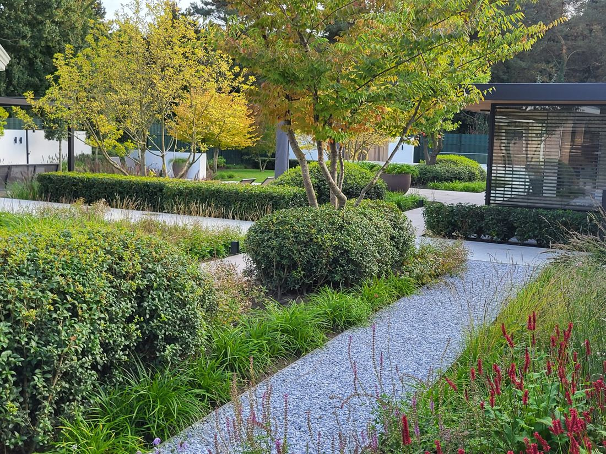
Tuinontwerp
In 2D of 3D
Uw wensen vertaald naar een persoonlijk ontwerp, met beplanting, bestrating, verlichting en beregening.
Meer info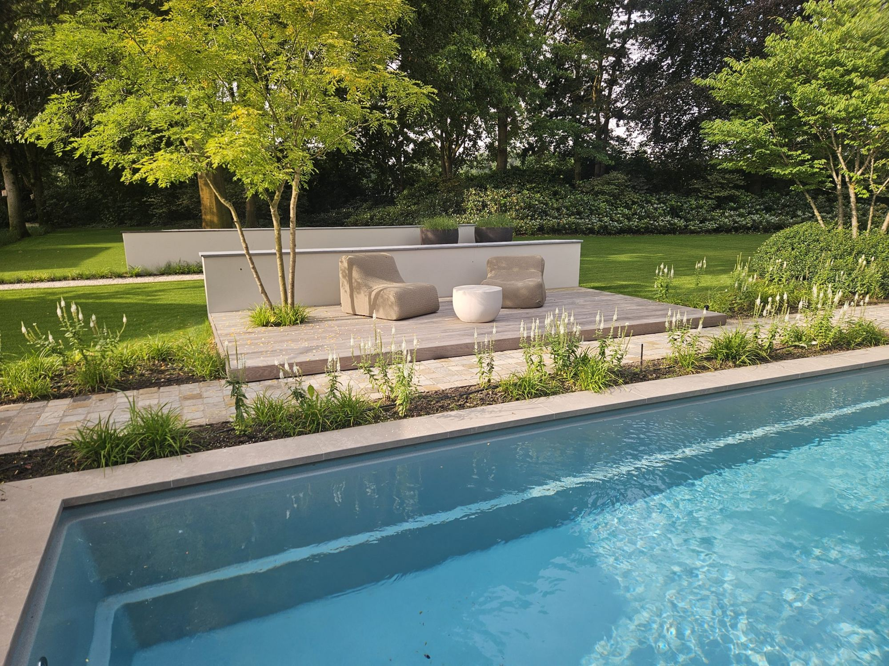
Hoveniersbedrijf uit Etten-Leur. Wij maken het ontwerp en ons eigen team legt de tuin aan, van strakke stadstuin tot grote landelijke tuin. Daarna houden we hem graag voor u mooi.
Hij heeft goed geluisterd naar onze wensen en deze waren volledig terug te zien in het ontwerp. Alles is van A tot Z geregeld.Brigitte, via Google · 5,0 uit 24 reviews
Van het eerste ontwerp tot het onderhoud jaren later. Voor particulieren en bedrijven.

Uw wensen vertaald naar een persoonlijk ontwerp, met beplanting, bestrating, verlichting en beregening.
Meer info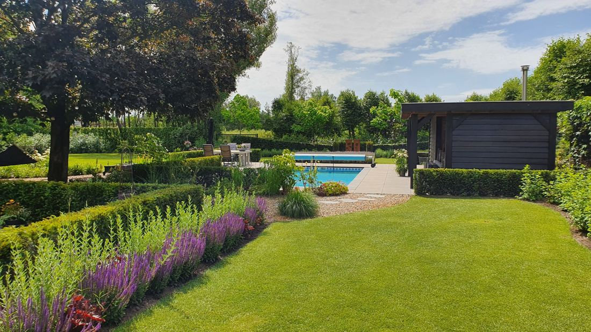
Grondwerk, bestrating, beplanting en afwerking. Van gezellige stadstuin tot grote landelijke tuin.
Meer info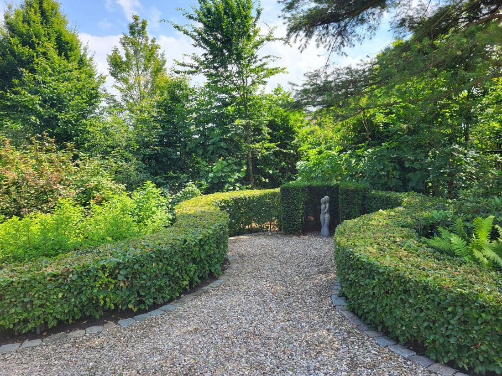
Van één snoeibeurt per jaar tot het complete onderhoud. Ook met een onderhoudscontract voor bedrijven.
Meer info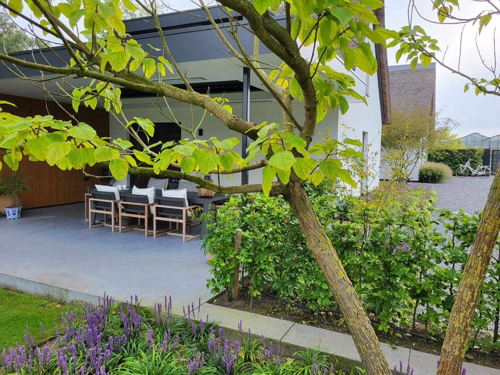
Zijn de planten te groot geworden of wilt u iets anders? We vernieuwen uw tuin, deels of helemaal.
Meer info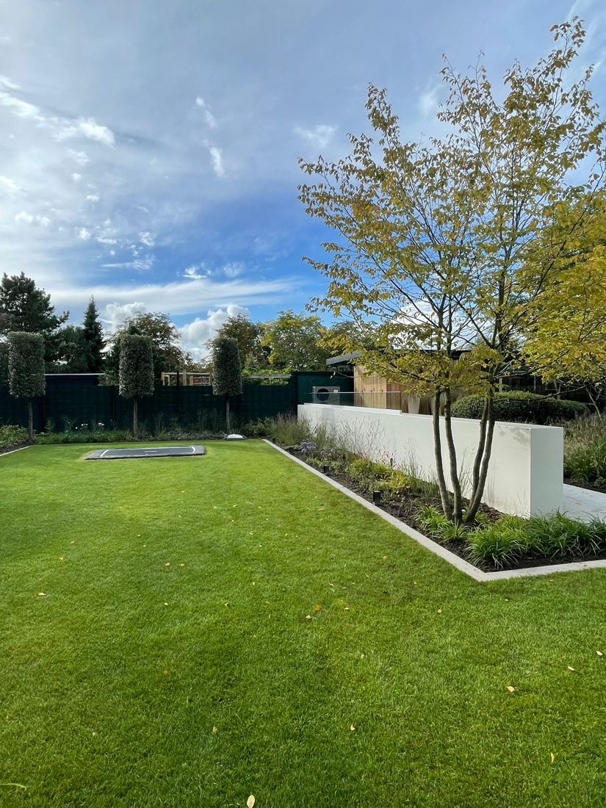
Van kale, vastgereden grond naar een tuin die past bij uw nieuwe woning. Met goed grondwerk als begin.
Meer info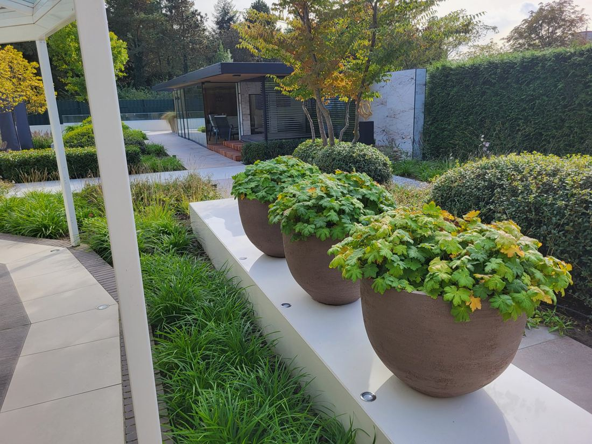
Terrassen, paden en opritten. Van keramische tegels tot oud gebakken klinkers en natuursteen.
Meer info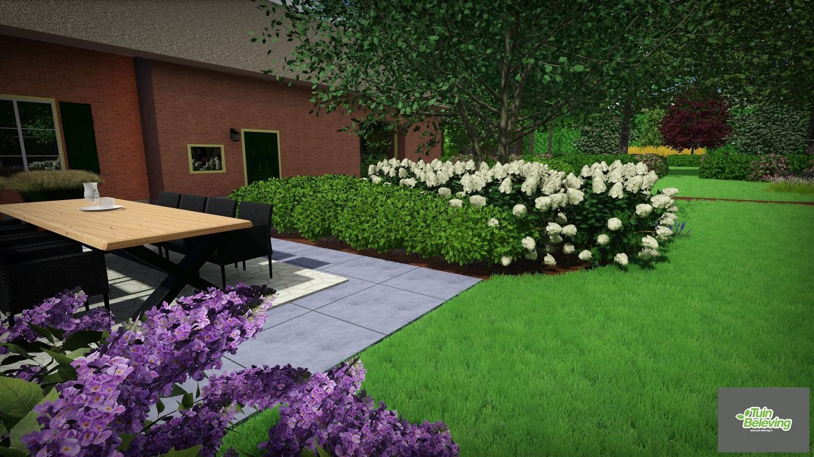
Wij ontwerpen en leggen zelf aan. Daardoor denken we bij het tekenen al na over de uitvoering, en weet het hele team precies wat er met u is afgesproken.
Geen verborgen kosten achteraf: beregening, verlichting en alles wat erbij hoort staat meteen in de offerte.
Strak en modern of juist landelijk. Een greep uit ons werk in West-Brabant.
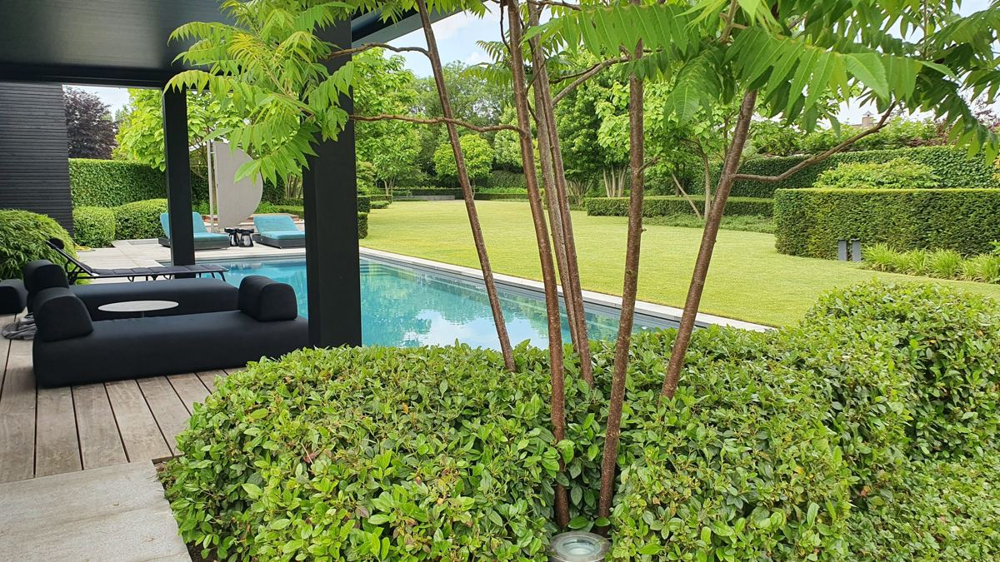
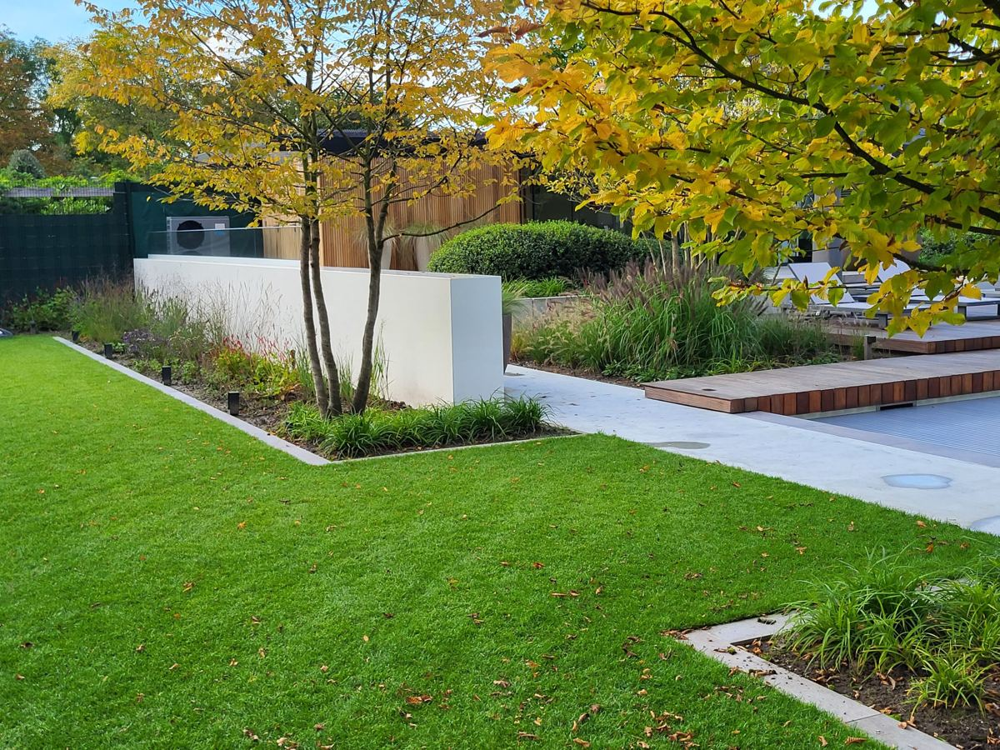
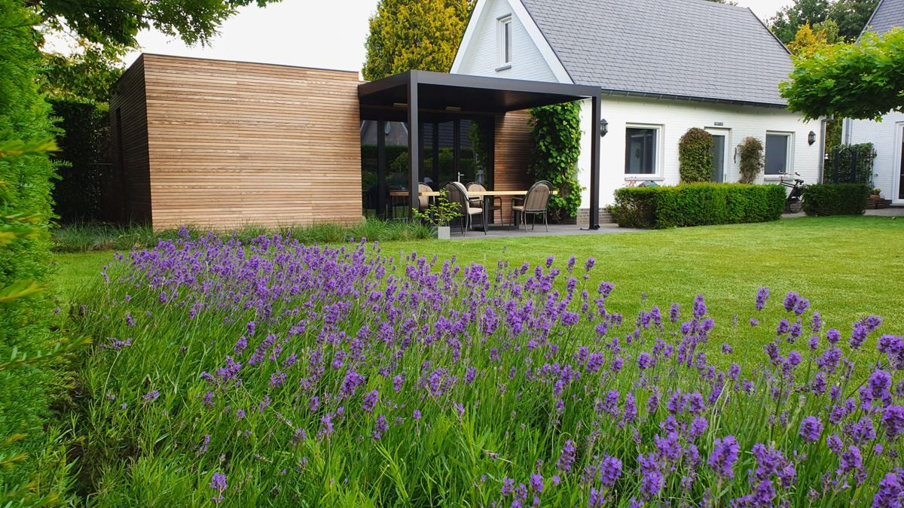
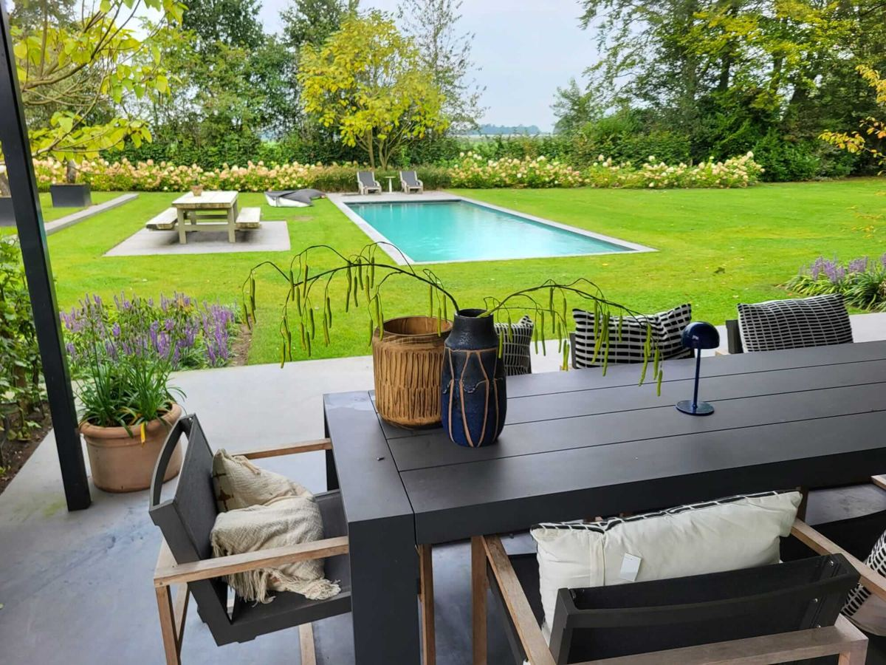
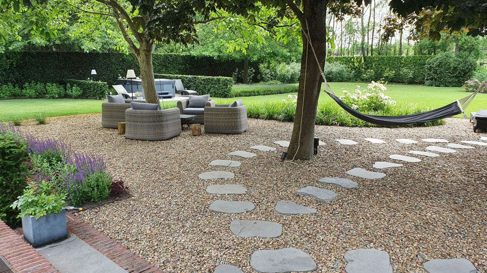
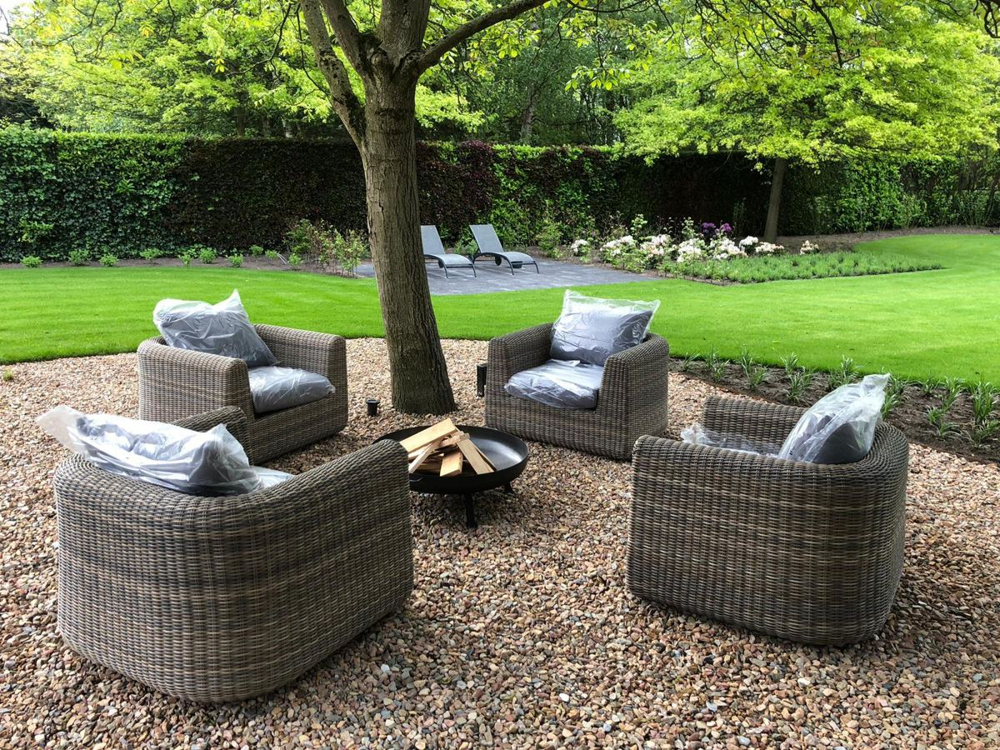
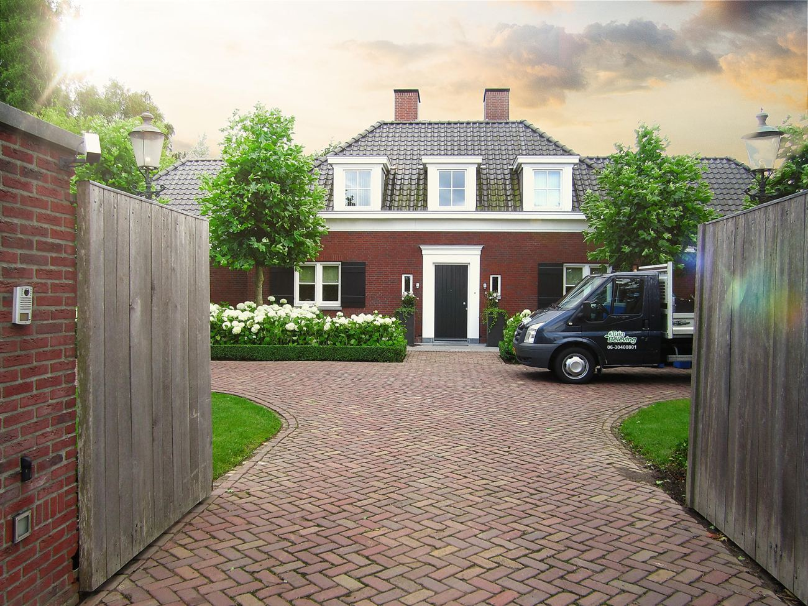
Tuinbeleving is in 2008 gestart door hovenier en tuinarchitect Berry Jansen. Wat begon als zijn persoonlijke passie, is uitgegroeid tot een team van enthousiaste hoveniers met liefde voor het vak.
Berry maakt het ontwerp en is zelf betrokken bij de aanleg. U heeft dus korte lijnen en één aanspreekpunt, van het eerste gesprek tot het laatste blaadje dat bij de oplevering wordt opgeveegd.
Vertel kort wat u wilt met uw tuin. We nemen contact op om een afspraak bij u thuis te plannen.
Bel of app Berry. Een kennismaking bij u thuis is altijd vrijblijvend.